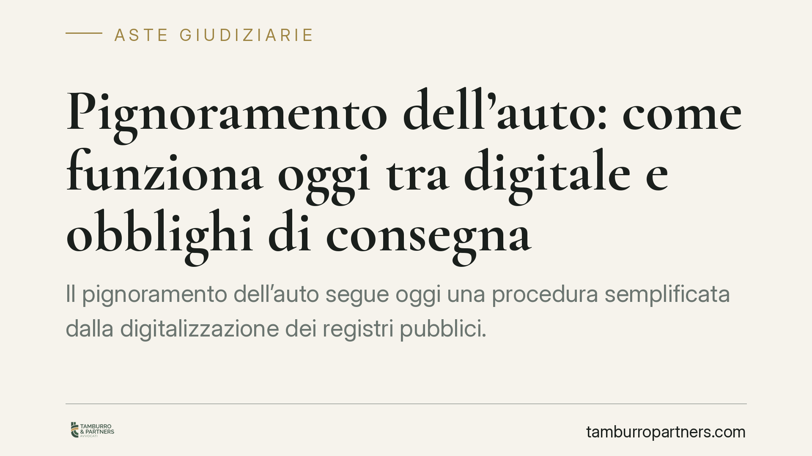

Pignoramento dell'auto: come funziona oggi tra digitale e obblighi di consegna
Il pignoramento dell'auto segue oggi una procedura semplificata dalla digitalizzazione dei registri pubblici. Dopo la notifica, il debitore deve consegnare il veicolo entro dieci giorni: in caso contrario interviene la polizia per il ritiro forzato. Comprendere tempi e obblighi è decisivo per chi subisce l'esecuzione e per chi vi partecipa come creditore o acquirente all'asta.

Il fatto
Pignorare un'automobile non richiede più che l'ufficiale giudiziario rintracci fisicamente il veicolo. Da quando è operativo l'art. 521-bis del codice di procedura civile, l'esecuzione sui beni mobili registrati parte da un atto notificato al debitore e trascritto nei pubblici registri. Il collegamento tra autorità procedente, Pubblico Registro Automobilistico e forze dell'ordine ha reso la procedura più rapida e difficile da eludere.
Il punto centrale, per chi subisce il pignoramento, è l'obbligo di consegna del veicolo entro un termine breve. Non è più questione di attendere il passaggio dell'ufficiale giudiziario: l'iniziativa passa in capo al debitore, che deve attivarsi.
Inquadramento normativo
L'art. 521-bis c.p.c. disciplina l'espropriazione di autoveicoli, motoveicoli e rimorchi. Il pignoramento si perfeziona con la notifica al debitore di un atto che contiene l'intimazione a consegnare il bene entro dieci giorni all'Istituto Vendite Giudiziarie (IVG) competente. Contestualmente, l'atto viene trascritto nei registri: da quel momento il veicolo è vincolato all'esecuzione.
Sul piano sostanziale opera l'art. 2913 del codice civile, secondo cui gli atti di disposizione del bene pignorato non hanno effetto rispetto al creditore procedente e ai creditori intervenuti. In termini pratici: dopo la trascrizione del pignoramento, un'eventuale vendita dell'auto a terzi resta inopponibile a chi ha avviato l'esecuzione. Il vincolo segue il bene.
Se il debitore non consegna spontaneamente il veicolo nel termine, gli organi di polizia sono autorizzati a procedere al ritiro forzato quando lo individuano sul territorio, per esempio durante un controllo su strada.
Implicazioni pratiche
Per il debitore, la fase più delicata coincide con i dieci giorni successivi alla notifica. Ignorare l'intimazione non blocca la procedura: il veicolo resta soggetto a ritiro in qualsiasi momento e la mancata collaborazione può aggravare la posizione, oltre a non evitare l'esito.
Per il creditore, la trascrizione tempestiva del pignoramento è ciò che rende il vincolo opponibile ai terzi. È l'elemento che protegge l'esecuzione da manovre dispositive del debitore.
Per chi guarda alle aste giudiziarie come acquirente, il veicolo confluisce presso l'IVG, che ne cura la custodia e la successiva vendita. L'acquisto in sede giudiziaria offre il vantaggio di un bene libero dai vincoli pregressi, ma richiede attenzione allo stato effettivo del mezzo, spesso valutabile solo con documentazione e visione diretta.
Un punto merita chiarezza: la trascrizione non trasferisce la proprietà, ma vincola il bene. La titolarità resta al debitore fino all'aggiudicazione, con i limiti dell'art. 2913 c.c. sugli atti dispositivi.
Cosa fare in concreto
- Verifica subito la notifica. Se ricevi l'atto di pignoramento, controlla data di notifica e termine di consegna: i dieci giorni decorrono da lì e non si interrompono da soli.
- Non trasferire né nascondere il veicolo. Gli atti dispositivi sono inopponibili al creditore ex art. 2913 c.c. e la sottrazione può esporre a conseguenze ulteriori.
- Consulta un legale prima della scadenza. Esistono margini per contestare vizi dell'esecuzione o valutare soluzioni con il creditore, ma vanno esaminati con tempestività.
- Se sei creditore, cura la trascrizione. Assicurati che il pignoramento sia trascritto correttamente nei registri per rendere il vincolo opponibile ai terzi.
- Se partecipi come acquirente, esamina la scheda del bene. Richiedi all'IVG le informazioni sullo stato del veicolo e valuta la visione prima di formulare l'offerta.
La procedura digitalizzata ha ridotto i tempi e gli spazi di elusione, ma ha reso anche più rilevante la reazione tempestiva di chi vi è coinvolto. In materia esecutiva, il fattore tempo è spesso decisivo quanto il merito.
---
*Contributo informativo a cura di Tamburro & Partners - Avv. Giuseppe Tamburro. Non costituisce parere legale.*
Comprare bene all’asta si può.
Se vuoi acquistare un immobile all’asta in sicurezza o difendere un esecutato, scrivi allo studio. Ti rispondiamo entro un giorno lavorativo.